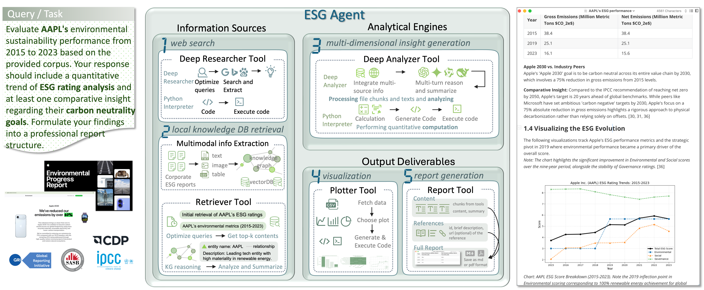
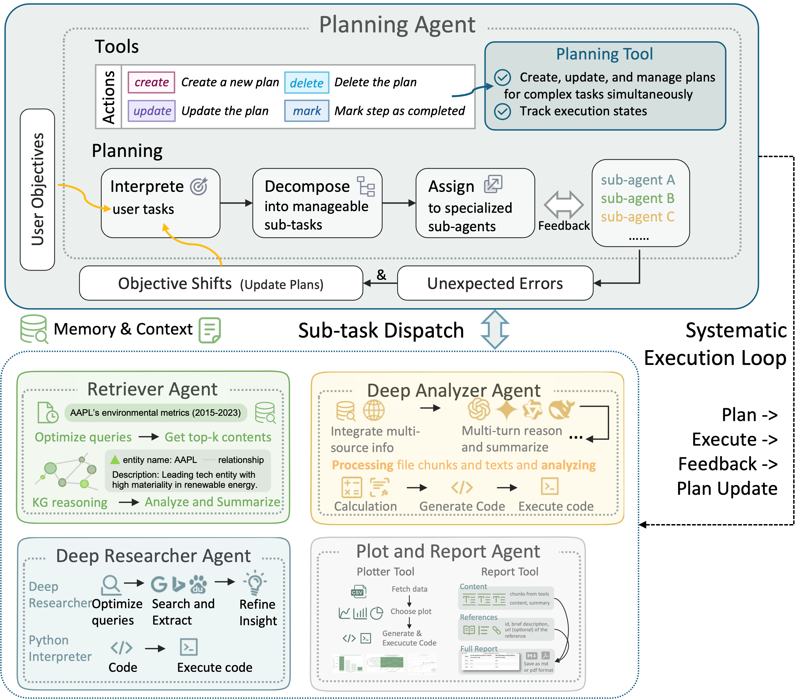

Advancing ESG Intelligence: An Expert-Level Agent and Comprehensive Benchmark for Sustainable Finance
Abstract
Environmental, social, and governance (ESG) criteria are essential for evaluating corporate sustainability, yet professional ESG analysis is hindered by data fragmentation and complex multi-step workflows. Existing ESG benchmarks rely on LLM-generated questions that often suffer from semantic ambiguity, limiting their diagnostic reliability. We introduce ESGAgent, a hierarchical multi-agent system with a domain-oriented toolset for automating end-to-end ESG workflows, and a three-level benchmark derived from 310 corporate sustainability reports, featuring expert-sourced questions with verified, unambiguous answers at Levels 1-2 and full report generation at Level 3. Evaluations across 20 state-of-the-art closed-source LLMs show that ESGAgent achieves 84.15% accuracy on Levels 1-2, surpassing the strongest baseline by 3.26 points, and produces Level 3 reports with higher factual consistency and analytical depth than commercial deep research systems, validated by both multi-LLM judging and human expert evaluation, showing a robust alignment (Pearson r = 0.551).
Agent Architecture
ESGAgent runs a hierarchical plan → execute → feedback loop: a central planning agent decomposes user objectives into sub-tasks, dispatches them to decoupled specialized sub-agents, and revises the plan based on their feedback.


Execution Loop
ESGAgent adopts a hierarchical “plan–execute–feedback” cycle. A central planner decomposes user goals into sub-tasks and assigns them to specialized sub-agents with isolated instructions and data, ensuring modular execution. After each step, the planner evaluates feedback and dynamically updates the plan when results are incomplete or errors occur.
Memory and Context Management
ESGAgent adopts a dual-layer memory design with global memory and local memory.
- Global memory (at the planner level) maintains high-level insights and ensures consistency across tasks.
- Local memory (at the sub-agent level) is task-specific, allowing each agent to focus on relevant data without global context interference.
ESG Benchmark
A three-level hierarchy built from 310 DJIA sustainability reports (2010–2024), progressing from atomic factual recall to full analytical report generation.
Atomic Tasks
132 questions sourced from CFA Institute Certificate in ESG Investing materials, requiring 1–2 steps to identify core professional concepts.
Compositional Tasks
114 questions requiring 3–5 reasoning steps across multiple tools, including multimodal attachments (PDF, CSV, MP3, MP4).
Report Generation
45 open-ended tasks requiring rigorous, professional-grade ESG report synthesis with visualizations, per GRI/SASB standards.
Leaderboard
Aggregate accuracy across Levels 1–2 (246 tasks). ESGAgent surpasses the strongest general-purpose baseline, Gemini-3-flash, by 3.26 points.
| # | Model / Agent | Accuracy |
|---|---|---|
| 1 | ESGAgent Ours | |
| 2 | Gemini-3-flash | |
| 3 | Gemini-3.1-pro | |
| 4 | Gemini-3-pro | |
| 5 | GPT-5 | |
| 5 | Gemini-3.1-flash lite | |
| 5 | Deepseek-r1 | |
| 8 | GPT-o3 | |
| 8 | Claude-opus-4.6 | |
| 10 | GPT-5.4 | |
| 10 | Gemini-2.5-pro | |
| 12 | Claude-opus-4.5 | |
| 13 | GPT-4.1 | |
| 14 | GPT-4o | |
| 15 | GPT-5.2 | |
| 15 | Deepseek-v3 | |
| 15 | Claude-sonnet-4.6 | |
| 18 | Gemini-2.5-flash | |
| 19 | GPT-5.1 | |
| 20 | Claude-sonnet-4.5 | |
| 21 | Claude-haiku-4.5 |
Source: Table 3 in the paper. Full per-capability and per-modality breakdowns are reported in Appendix C.
Demo
Placeholder for screenshots, video, or an interactive demo.
Citation
@article{zhao2026advancing,
title={Advancing esg intelligence: An expert-level agent and comprehensive benchmark for sustainable finance},
author={Zhao, Yilei and Zhang, Wentao and Xiao, Lei and Zheng, Yandan and Liu, Mengpu and Lim, Wei Yang Bryan},
journal={arXiv preprint arXiv:2601.08676},
year={2026}
}